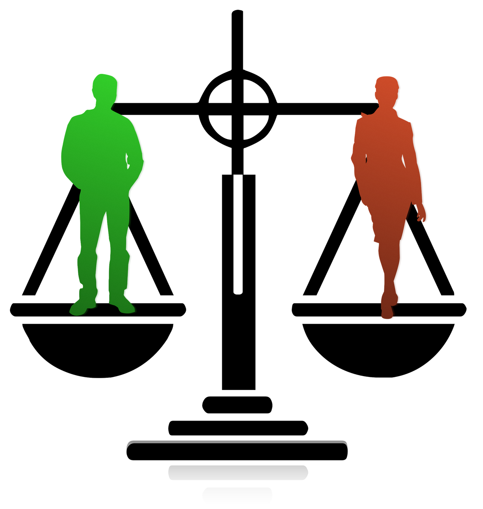

La igualtat és un principi fonamental per a nosaltres, cosa que implica
que tothom ha de ser igual davant la llei, sense discriminació. L’equitat, per altra banda, reconeix que algunes persones poden
necessitar més suport que altres per assolir la igualtat, i per això ens esforcem a oferir ajuda addicional a qui més la necessita.
A més, ens comprometem a combatre el rebuig i el maltractament cap a les persones migrants i refugiades. Creiem fermament que defensar aquests drets és essencial per construir una societat més justa, inclusiva i pròspera per a tots els seus membres.